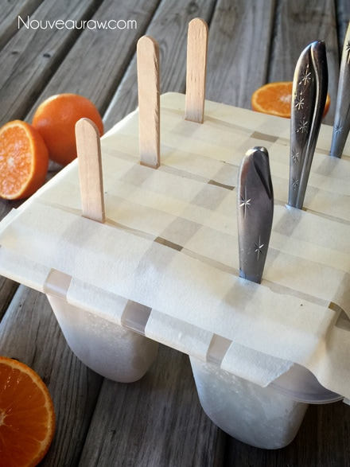
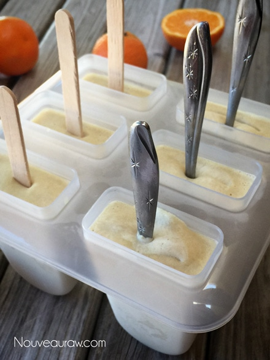
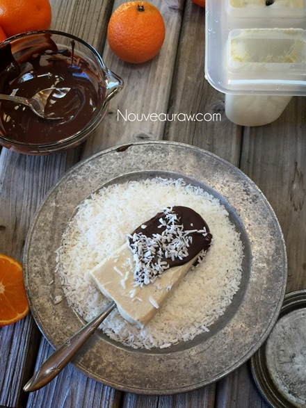
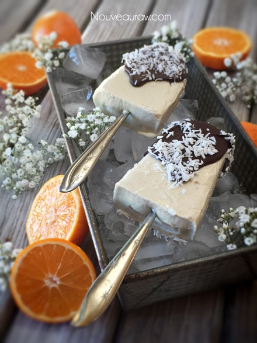
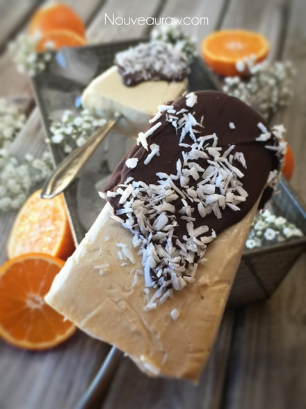
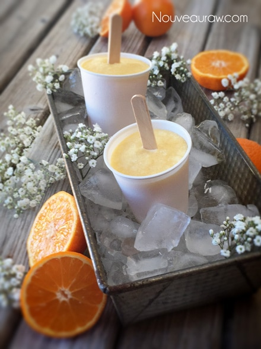
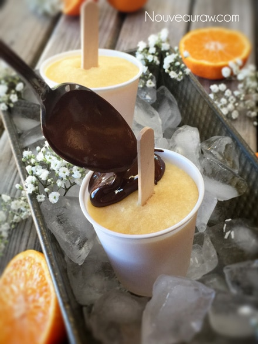
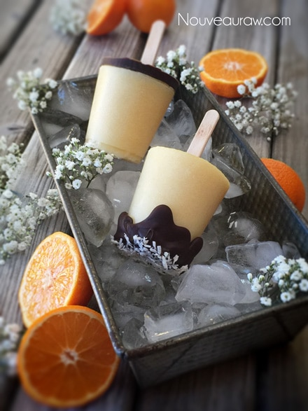

Orange Julius Creamsicle Lollies

~ raw, vegan, gluten-free, nut-free ~
There is nothing like a cold, creamy, citrusy flavored popsicle in the heat of Summer, but it doesn’t have to be Summer to enjoy these Orange Julius Creamsicle Lollies. No siree bob! They are a year-round treat. Whether you are sporting a swimsuit or a parka, give this recipe a try.
The refreshing combination of young Thai coconuts and fresh-squeezed orange juice, give this treat the taste of orange sherbet. It’s literally like sunshine and happiness all rolled into one.
Think outside the popsicle stick.
I love playing around with the different looks that you can create with frozen treats. To make them more on the elegant side I used my regular popsicle mold, but instead of using the typical popsicle sticks, I slid real spoons into each cavity. The unusual sticks make for a great look when hosting a dinner party or you just want to make a quick but elegant dessert.
We all know that chocolate pairs with just about anything and can elevate not only the flavor but also the look of any dessert. So without any hesitancy, I poured some over the top of each lolly and then gave them a fairy dusting of shredded coconut. To add a little more fun to the whole process, I made some smaller lollies in 3 oz Dixie cups, which turned out adorable if I do say so myself.
Let’s talk about Substitutions
For the creamy base of this treat, I used young Thai coconuts. If these are difficult for you to find, you could substitute soaked cashews. Fresh squeezed orange juice is the key flavor ingredient here so make sure that you use the best oranges that you can get. For juicing, I prefer to use Valencia oranges. They are virtually seedless, sweet, flavorful, and tend to produce quite a bit of juice and in fact, they are known as the “King of Juice Oranges.”
Raw honey… I recommend it, BUT I realize that many of you don’t partake of bee products. So just use any liquid sweetener you like. Lastly, culinary grade Orange Essential Oil. I added it to bump up the overall orange flavor because when ingredients are frozen, they tend to be less bright on the taste buds. But that’s not the only reason… Orange Essential Oil has anti-inflammatory, antidepressant, antispasmodic, antiseptic, aphrodisiac, carminative, diuretic, tonic, and sedative properties. I try to put a lot of thought into the ingredients that I whip together. Enjoy!
Yields 2 1/2 cups
- 1 cup orange juice
- 1 1/2 cups (278 g) Young Thai coconut meat/flesh
- 3 Tbsp raw honey or maple syrup
- 1/4 tsp orange extract or 2 drops Living Young essential oil
- 1/2 tsp vanilla extract
- Place the orange juice, coconut meat, sweetener, orange oil, and vanilla extract in the blender. Blend until creamy smooth.
- Pour mixture into popsicle molds. Let set for 30-60 minutes, then add the popsicle sticks. Freeze for another 4-6 hours or until frozen.
- When you’re ready to serve, run some warm water along your popsicle mold to loosen the popsicles, and serve immediately.
Freezing Suggestions for Ice Cream:
-
Freeze in popsicle molds or 3 oz Dixie cups with a popsicle stick inserted.
-
-
Store the ice cream in the very back of the freezer, as far away from the door as possible. Every time you open your freezer door you let in warm air. Keeping ice cream way in the back and storing it beneath other frozen-sold items will help protect it from those steamy incursions.
-
Wish to make your own raw ice cream, wonder what machine I might recommend, and more? Click (
here) to check out the Reference Library!
Below, here is how I get my sticks and spoons
to remain upright as the batter sets up. Masking tape! Works
like a charm. Just run the tape in two directions as shown in the photo.

After the lollies were set up and the tape was removed.







© AmieSue.com